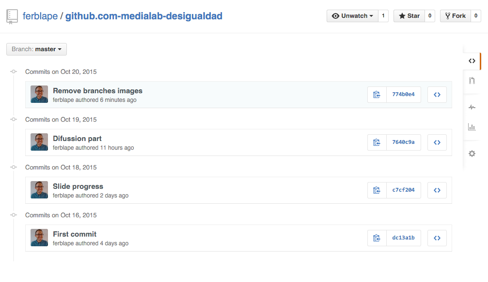
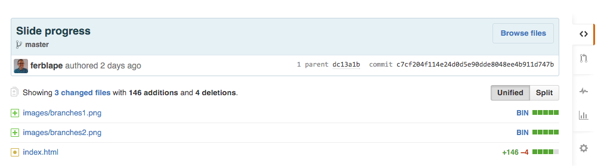
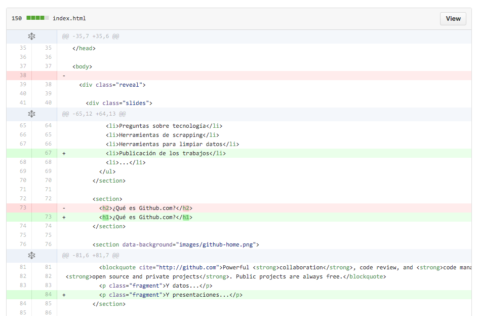
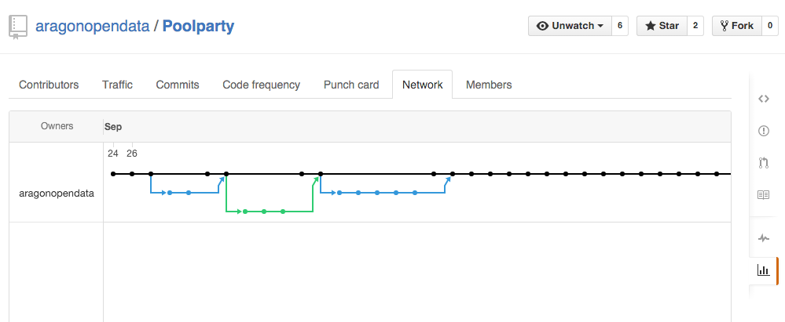

Creating a Dashboard with dc.js
Fernando Blat // @ferblape
¿Qué es Github.com?
Una herramienta colaborativa para crear y difundir proyectos de programación e información digital
¿Qué es Github.com?
- Los proyectos se componen de ficheros y directorios almacenados en la nube
- Pueden ser públicos o privados
- La tecnología Git nos permite recuperar versiones anteriores de los ficheros
- También nos permite trabajar "cómodamente" con otras personas
¿Qué es Github.com?
- Wikis
- Reporte de indicencias
- Publicación de archivos HTML + CSS + Javascript + Imágenes
Tres ejemplos
Difusión
Perfiles de usuario: https://github.com/ferblape
Perfiles de grupo: https://github.com/aragonopendata
Difusión
Difusión
Colaboración
Los proyectos de Github se llaman repositorios
Un repositorio pertenece a una persona (u organización)
Los repositorios se pueden clonar, modificar, y volver a unificar
Colaboración
Los cambios en los ficheros y directorios se registran en commits
Cada commit va asociado a un mensaje de cambio
Es una foto del contenido de los ficheros y directorios
Commits

Primer commit

Segundo commit

Segundo commit

Saltos en el tiempo
En cualquier momento puedo restaurar un commit antiguo y volver a la última versión
Se utilizan los identificadores de commit
Workflow habitual
Colaboración
Un proyecto se clona para ser modificado
Después de modificado, se puede solicitar la re-unificación
Los commits nos sirven para re-unificar los ficheros de forma inteligente
Ejemplo de ramificación

¿Cómo subir proyectos a Github?
¿Cómo subir proyectos a Github?
- Creándose una cuenta en Github
- https://desktop.github.com/
- Introducir los credenciales
- Arrastrar y soltar ficheros para crear un proyecto nuevo
- Sincronizar con un proyecto que ya exista
¿Cómo subir proyectos a Github?
- https://help.github.com/
- Preguntar al asistente técnico
Elementos de un proyecto
- Directorios y ficheros
- Fichero
README.md - Fichero
LICENSE - Cualquier otro meta-fichero que pueda ser útil
Fichero README.md
La extensión .md viene del lenguaje Markdown
Markdown es un formato ligero de texto plano pensado para ser convertido a HTML sin perder legibilidad
<h2>Esto es un titular</h2> <p>Esto es un texto con <strong>negrita</strong>, <em>cursiva</em>, <a href="http://github.com">y un enlace</a></p> <p>Esto es otro párrafo</p> <ul> <li>Esto es</li> <li>una lista</li> <li>de varios elementos</li> </ul>
### Esto es un titular Esto es un texto con **negrita**, _cursiva_, [y un enlace](http://github.com) Esto es otro párrafo - Esto es - una lista - de varios elementos
Resumen Markdown
Titulares: #, ##, ###, ####
Negritas: **negrita**
Cursivas: _cursivas_
Enlaces: [y un enlace](http://github.com)
Listas: - elementos de la lista
Más información: Markdown
Licencias
Crear un fichero LICENSE
Copiar el contenido de la licencia en él. Por ejemplo: Creative Commons
En Resumen
Github es una gran plataforma para publicar nuestros proyectos
En principio está enfocada a código, pero también se empieza a usar con datos
Publicar nuestro trabajo va a ser beneficioso para nosotros
Tenemos que cuidar los detalles
¿Sería bueno para mi equipo?